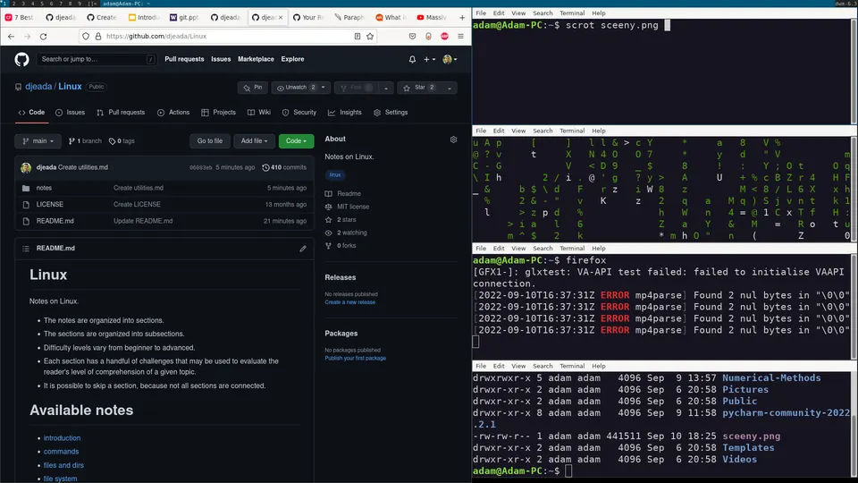

The Dynamic Window Manager (DWM) is a minimal, lightweight, and highly efficient tiling window manager designed to help you manage application windows in a clean and distraction-free manner. Instead of overlapping windows as seen in traditional window managers, DWM organizes windows in a tiled layout, making it easy to see and navigate multiple applications simultaneously. DWM is based on the X Window System, making it suitable for use on Unix-like operating systems.
DWM stands out for its extreme simplicity and high customization capability. It is part of the suckless software philosophy, which emphasizes clarity, simplicity, and resource efficiency.

Here's how DWM looks in action. Each window takes a portion of the screen, allowing for easy multitasking.
Installation of DWM is straightforward. If you're on a Debian-based system such as Ubuntu or Mint, you can install DWM and its related suckless-tools packages using the following command in your terminal:
sudo apt install dwm suckless-toolsThe suckless-tools package contains additional utilities developed by the suckless community, including dmenu, a fast and lightweight dynamic menu for X, and slock, a simple screen locker utility.
After installation, you can choose DWM as your window manager from the login screen.
Remember that DWM is highly customizable, but changes typically require modifying the source code and recompiling. So if you're up for some tinkering, you can clone the DWM source code from the suckless website, make changes to suit your needs, and then build and install your custom version of DWM.
Shift + Alt + Enter, which typically launches the st terminal or xterm if st isn't installed.Alt + j and Alt + k, which cycle through the windows in the currently visible tag.Alt + Enter.exit and pressing Enter in terminal windows.Alt + [tag number], with tag numbers ranging from 1 to 9.Shift + Alt + q, which will close the window manager and return you to your display manager or console.Shift + Alt + [tag number].Alt + t. This shortcut can also be used to revert the window back to the tiled layout.Alt + m, which switches to the monocle layout, making the focused window occupy the entire screen. This is particularly useful when you want to focus on a single window.Alt, then right-clicking and dragging the window.Alt and then left-clicking and dragging the window.dmenu can be done by pressing Alt + p, allowing you to start applications by typing their name, making for a quick and efficient workflow.Alt + Space. This is useful when you want to experiment with different ways of arranging your windows.Alt + 0. This allows you to quickly access any open window without switching tags.Shift + Alt + s. This is useful for keeping a window handy without cluttering your main workspace.Alt + Tab, allowing for fast toggling between workspaces.Alt + l. This is handy when you want to quickly shift your attention to the main application you're working on.Alt and pressing h or l. This allows you to give more screen space to the master window or the stack area as needed.Shift + Alt + r, which reloads DWM with any new configurations applied, making it easier to test changes without disrupting your session.scrot or maim and binding them to a key combination in your config.h. For example, Alt + Shift + s could be used to take a screenshot of your current screen.Shift + Alt + c, force-closing the application without needing to open a task manager.Alt + Shift + l to launch a screen locker like slock, ensuring your system is protected when you step away.Alt + Shift + [arrow key], allowing you to quickly move focus or windows across different screens.Unlike other window managers that use configuration files, DWM is customized by directly modifying its source code and then recompiling it. This approach provides a lot of flexibility and control over DWM's behavior and appearance. The main configuration is located in the config.h file, which can be found in the DWM source code directory.
Follow these steps to customize DWM to your preferences:
You can clone the source code from the official suckless git repository using the following command:
git clone https://git.suckless.org/dwmdwm Directory and Create a config.h FileThe config.def.h file contains the default settings. To customize DWM, you should first copy config.def.h to config.h. Then, you can edit the config.h file with your preferred text editor (e.g., nano, vim, emacs). Here's how to do that:
cd dwm
cp config.def.h config.h
nano config.hconfig.h FileIn the config.h file, you can change various settings according to your preferences. For example, you can modify key bindings, set custom colors, define the status bar's appearance, and select the default font.
Changing the Border Configuration:
I. Within config.h, locate the section where the border settings are defined. It typically looks like this:
static const unsigned int borderpx = 1; /* border pixel of windows */borderpx controls the width of the border around each window. The default value is usually 1 pixel.
II. To increase or decrease the border width, change the value of borderpx. For example, to set the border width to 2 pixels, change the line to:
static const unsigned int borderpx = 2;If you want to remove the border entirely, you can set borderpx to 0:
static const unsigned int borderpx = 0;III. The border color for both focused and unfocused windows is defined in the color scheme section of config.h. Look for the following lines:
static const char col_gray1[] = "#222222";
static const char col_gray2[] = "#444444";
static const char col_gray3[] = "#bbbbbb";
static const char col_gray4[] = "#eeeeee";
static const char col_cyan[] = "#005577";
static const char *colors[][3] = {
/* fg bg border */
[SchemeNorm] = { col_gray3, col_gray1, col_gray2 },
[SchemeSel] = { col_gray4, col_cyan, col_cyan },
};Here, col_cyan is used for the border of the focused window, and col_gray2 is used for the unfocused windows. To change the border color, replace the hex color code with your preferred color. For example, to change the focused window border to red:
static const char col_red[] = "#ff0000";
static const char *colors[][3] = {
/* fg bg border */
[SchemeNorm] = { col_gray3, col_gray1, col_gray2 },
[SchemeSel] = { col_gray4, col_red, col_red },
};IV. After adjusting the border settings and any other customizations, save your changes and exit the text editor.
After modifying the config.h file, you need to compile the DWM source code and install the new binary:
sudo make clean installThis command will clean up any previous builds and compile your customized version of DWM.
To apply your changes, you need to restart DWM. You can do this by logging out and logging back in, or by restarting your X session. Once you log back in, the updated DWM with your new border settings and other customizations should be in effect.
Alt + j, Alt + k). Document how DWM arranges the windows in its default tiling layout and compare the experience to a traditional floating window manager.config.h file to change the border width and border color of focused windows. Recompile, install, and verify that your changes take effect. Explain the process and why DWM requires recompilation for configuration changes.config.h to launch a specific application (such as a web browser or file manager) with a new keyboard shortcut. Rebuild DWM and test the binding. Discuss the advantages and disadvantages of source-level configuration compared to configuration files.Shift + Alt + [tag number], and explain how tags differ from traditional virtual desktops.xsetroot -name. Configure the script to run on startup and explain how DWM uses the root window name as the status bar text.dmenu as your application launcher within DWM. Practice launching applications by typing their names, and customize the dmenu appearance (font, colors) through command-line flags or source code modifications. Compare dmenu with other application launchers you have used.Alt + Space. Resize the master area using Alt + h and Alt + l, and explain when each layout mode might be most useful for your workflow.man dwm.config.h files, serving as a treasure trove of interesting and varied configurations. Exploring these files can provide new ideas for your own DWM setup or even a ready-to-use configuration that suits your needs. Visit the archive at https://dwm.suckless.org/customisation/.